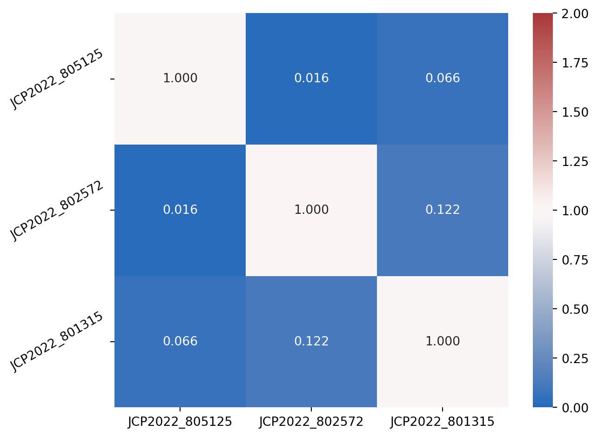

import requests
from random import choices, seed
import matplotlib.pyplot as plt
import polars as pl
import seaborn as snsExplore perturbation clusters
A common question we aim to ask is “What other perturbations look like mine?” The easiest way to get the answer for this question is using our browsable datasets. In this case we would like to use the ‘Matches’ databases, which provide cosines similarities between perturbations within a dataset, obtained from all-vs-all calculations.
The limitation of this approach is that the size of JUMP results in two challenges: - Calculating the distances across all pairs of perturbations is intractable for most computers without a GPU (Graphics Processing Unit). - The resultant similarity matrix is too big for web browser-based exploration, so we limit the browsable similarity dataset to the top 100 most correlated/anticorrelated pairs of perturbations.
Despite the aforementioned problems, we provide the full matrix of perturbation distances in case it is of use to data analysts. You can find this and other datasets on Zenodo. The data files of interest for this exercise are “{org,crispr}_cosinesim_full.parquet”.
The following analysis focuses on showcasing how to query one of these distance matrices to find all the distances between any given perturbation and all others. One use-case of this is testing how similar perturbation A and B are relative to perturbation C’s similarity to A.
We select the CRISPR dataset for this example. As with previous examples, this is a lazy-loaded data frame. This enables us to download very big datasets without worrying about whether or not they will fill into memory. In these datasets, the values range between 0 and 2, where 0 means that two profiles are the same, 1 means that they are orthogonal (completely uncorrelated) and 2 means that they are completely anticorrelated.
latest_id = requests.get(
"https://zenodo.org/api/records/15029005/versions/latest"
).json()["id"]
distances = pl.scan_parquet(
f"https://zenodo.org/api/records/{latest_id}/files/crispr_cosinesim_full.parquet/content"
)
distances.head().collect()
shape: (5, 7_977)
| JCP2022_800002 | JCP2022_804257 | JCP2022_800001 | JCP2022_807659 | JCP2022_804265 | JCP2022_806265 | JCP2022_806261 | JCP2022_806729 | JCP2022_803314 | JCP2022_802979 | JCP2022_806962 | JCP2022_806268 | JCP2022_804038 | JCP2022_806179 | JCP2022_800727 | JCP2022_802154 | JCP2022_807376 | JCP2022_804145 | JCP2022_802626 | JCP2022_805727 | JCP2022_806728 | JCP2022_800720 | JCP2022_806322 | JCP2022_800211 | JCP2022_807625 | JCP2022_806262 | JCP2022_800722 | JCP2022_806355 | JCP2022_807689 | JCP2022_802978 | JCP2022_804339 | JCP2022_802156 | JCP2022_805842 | JCP2022_803539 | JCP2022_801752 | JCP2022_806465 | JCP2022_804256 | … | JCP2022_807231 | JCP2022_806253 | JCP2022_807298 | JCP2022_806029 | JCP2022_801701 | JCP2022_804355 | JCP2022_807736 | JCP2022_807296 | JCP2022_800623 | JCP2022_802285 | JCP2022_807807 | JCP2022_803076 | JCP2022_807682 | JCP2022_802284 | JCP2022_807601 | JCP2022_800922 | JCP2022_803868 | JCP2022_807282 | JCP2022_806012 | JCP2022_803064 | JCP2022_804173 | JCP2022_806750 | JCP2022_805191 | JCP2022_806954 | JCP2022_807207 | JCP2022_803842 | JCP2022_805262 | JCP2022_806300 | JCP2022_800955 | JCP2022_806451 | JCP2022_802973 | JCP2022_806353 | JCP2022_806629 | JCP2022_807055 | JCP2022_803920 | JCP2022_803433 | JCP2022_806755 |
|---|---|---|---|---|---|---|---|---|---|---|---|---|---|---|---|---|---|---|---|---|---|---|---|---|---|---|---|---|---|---|---|---|---|---|---|---|---|---|---|---|---|---|---|---|---|---|---|---|---|---|---|---|---|---|---|---|---|---|---|---|---|---|---|---|---|---|---|---|---|---|---|---|---|---|
| f32 | f32 | f32 | f32 | f32 | f32 | f32 | f32 | f32 | f32 | f32 | f32 | f32 | f32 | f32 | f32 | f32 | f32 | f32 | f32 | f32 | f32 | f32 | f32 | f32 | f32 | f32 | f32 | f32 | f32 | f32 | f32 | f32 | f32 | f32 | f32 | f32 | … | f32 | f32 | f32 | f32 | f32 | f32 | f32 | f32 | f32 | f32 | f32 | f32 | f32 | f32 | f32 | f32 | f32 | f32 | f32 | f32 | f32 | f32 | f32 | f32 | f32 | f32 | f32 | f32 | f32 | f32 | f32 | f32 | f32 | f32 | f32 | f32 | f32 |
| 0.999999 | -0.059666 | 0.554028 | -0.04492 | 0.084458 | 0.198055 | 0.163457 | 0.04502 | 0.218653 | -0.030881 | -0.115019 | 0.067704 | 0.063909 | -0.086127 | -0.13761 | 0.018139 | 0.277487 | 0.12156 | 0.196142 | 0.185373 | 0.22161 | 0.049051 | 0.079069 | 0.095291 | -0.006358 | 0.164252 | 0.010382 | 0.170655 | -0.004739 | 0.123559 | 0.222634 | 0.287115 | 0.14852 | 0.048594 | 0.133295 | 0.055545 | 0.204936 | … | 0.024226 | 0.103723 | 0.129336 | 0.060186 | 0.153712 | 0.292536 | -0.027199 | 0.046661 | 0.225604 | 0.18097 | 0.038953 | 0.129692 | 0.297067 | 0.204258 | 0.055386 | -0.100995 | 0.222322 | 0.107088 | -0.049594 | 0.031274 | 0.111466 | -0.012866 | 0.166112 | 0.070627 | 0.196426 | 0.018184 | 0.077372 | 0.00168 | 0.029651 | 0.004144 | -0.038176 | 0.017746 | 0.082222 | 0.133553 | 0.256799 | 0.150499 | -0.148298 |
| -0.059666 | 1.0 | 0.068846 | 0.257723 | -0.055745 | 0.160068 | 0.066599 | 0.22666 | -0.096645 | 0.182161 | 0.060595 | -0.092432 | -0.140241 | -0.166251 | 0.351551 | 0.104548 | 0.175636 | -0.080915 | 0.268312 | 0.081598 | -0.078976 | 0.085061 | 0.175086 | 0.156591 | -0.144433 | -0.067159 | 0.079739 | -0.026523 | 0.021242 | 0.004414 | -0.073372 | -0.250735 | -0.171763 | 0.022862 | 0.099566 | 0.028122 | 0.118512 | … | -0.117186 | -0.007871 | -0.202407 | -0.008858 | -0.0298 | 0.004507 | 0.120804 | -0.120418 | -0.007359 | -0.063996 | -0.158035 | -0.047624 | -0.244117 | -0.115544 | -0.052336 | -0.244374 | -0.015342 | -0.114599 | -0.165442 | 0.071 | -0.113728 | -0.147148 | 0.131772 | 0.063718 | 0.022331 | 0.03019 | 0.038044 | 0.033832 | 0.003136 | 0.077804 | 0.18082 | 0.108754 | -0.149983 | 0.164068 | -0.032468 | 0.032573 | -0.004394 |
| 0.554028 | 0.068846 | 1.0 | -0.021055 | -0.020687 | 0.118124 | -0.013529 | 0.061264 | 0.2244 | -0.030042 | -0.047166 | 0.062176 | 0.133311 | -0.013311 | 0.13743 | 0.234339 | 0.275142 | 0.016155 | 0.040506 | 0.174523 | 0.081297 | 0.104565 | -0.032407 | 0.064835 | -0.033852 | -0.079084 | 0.096579 | 0.033903 | 0.148587 | -0.07763 | -0.050441 | 0.037421 | 0.082778 | 0.259523 | 0.210857 | -0.163036 | -0.038427 | … | -0.121878 | -0.08347 | -0.071407 | -0.029764 | -0.174943 | 0.032168 | -0.034776 | -0.048515 | 0.084959 | -0.018989 | -0.136231 | -0.166889 | 0.070155 | 0.08003 | -0.251378 | -0.229524 | -0.10137 | -0.188785 | -0.240738 | -0.106309 | -0.117439 | -0.156961 | 0.194933 | 0.087295 | 0.163761 | -0.037735 | 0.089135 | -0.00075 | 0.091534 | 0.099934 | -0.056077 | 0.029897 | 0.240103 | 0.050657 | 0.138434 | -0.004588 | 0.064069 |
| -0.04492 | 0.257723 | -0.021055 | 1.0 | 0.089644 | 0.067335 | -0.025577 | 0.123663 | 0.071904 | -0.054312 | -0.013086 | -0.052465 | -0.064159 | -0.153556 | -0.031052 | -0.047702 | 0.151906 | 0.087058 | 0.173544 | 0.108165 | -0.010884 | 0.02935 | 0.046775 | 0.083638 | -0.08622 | -0.049466 | 0.02173 | 0.127262 | -0.111813 | -0.140585 | 0.031657 | 0.0149 | -0.247055 | -0.049721 | -0.078341 | 0.0766 | -0.017871 | … | 0.167638 | 0.115937 | -0.164784 | -0.001704 | -0.1072 | 0.024382 | -0.02293 | 0.026178 | 0.024607 | 0.02788 | 0.026813 | -0.026553 | -0.128696 | 0.085213 | 0.014539 | -0.111764 | -0.02768 | -0.172535 | 0.056149 | 0.145808 | 0.048146 | 0.073506 | -0.042293 | -0.027689 | 0.098935 | -0.015072 | -0.000547 | -0.197055 | 0.110045 | 0.065167 | 0.082572 | 0.00901 | -0.067735 | -0.049077 | -0.073309 | 0.013022 | 0.079246 |
| 0.084458 | -0.055745 | -0.020687 | 0.089644 | 1.0 | 0.071703 | -0.21677 | -0.076589 | -0.111722 | -0.066612 | -0.403551 | 0.165195 | -0.231784 | -0.241109 | -0.180663 | -0.123104 | 0.181903 | 0.061007 | 0.087123 | 0.193722 | -0.170243 | -0.158525 | -0.015301 | 0.125622 | -0.09637 | -0.085084 | -0.218039 | 0.071628 | -0.124489 | -0.025015 | 0.139949 | 0.122845 | -0.052666 | -0.233101 | -0.232259 | 0.141092 | 0.130888 | … | 0.265287 | 0.286886 | -0.002355 | -0.038169 | 0.014438 | 0.145315 | -0.05106 | 0.022923 | 0.172217 | 0.019209 | 0.040451 | 0.002263 | 0.075561 | 0.039665 | 0.065675 | 0.023255 | -0.088189 | 0.139301 | 0.073221 | 0.068625 | 0.185319 | 0.193696 | -0.021219 | 0.158883 | 0.103153 | 0.27625 | -0.047337 | -0.073299 | 0.049652 | -0.065445 | 0.165883 | 0.172696 | -0.025268 | 0.084685 | 0.012524 | 0.104712 | -0.056433 |
Note that the only metadata information in this matrix are the column names as JUMP IDs (JCP2022_X), meaning that we will need to use a mapper from these JUMP ids to conventional names; feel free to look at the previous how-to that demonstrates that. We will now select three features at random and look at their correlation matrix
seed(42)
cols = distances.collect_schema().names()
ncols = len(cols)
sampled_col_idx = sorted(choices(range(ncols), k=3))
sampled_cols = [cols[ix] for ix in sampled_col_idx]
sampled_distances = (
distances.with_row_index()
.filter(pl.col("index").is_in(sampled_col_idx))
.select(pl.col(sampled_cols))
.collect()
)
sampled_distances
shape: (3, 3)
| JCP2022_805125 | JCP2022_802572 | JCP2022_801315 |
|---|---|---|
| f32 | f32 | f32 |
| 1.0 | 0.01572 | 0.066012 |
| 0.01572 | 1.0 | 0.12222 |
| 0.066012 | 0.12222 | 1.0 |
Finally, we plot them in a heatmap for easier visualisation
pandas_correlation = sampled_distances.to_pandas()
pandas_correlation.index = pandas_correlation.columns
sns.heatmap(
pandas_correlation,
annot=True,
fmt=".3f",
vmin=0,
vmax=2,
cmap=sns.color_palette("vlag", as_cmap=True),
)
plt.yticks(rotation=30)
plt.tight_layout()
Whilst in this case it is not a terribly interesting result, this shows that we see no correlation between three randomly selected perturbations.